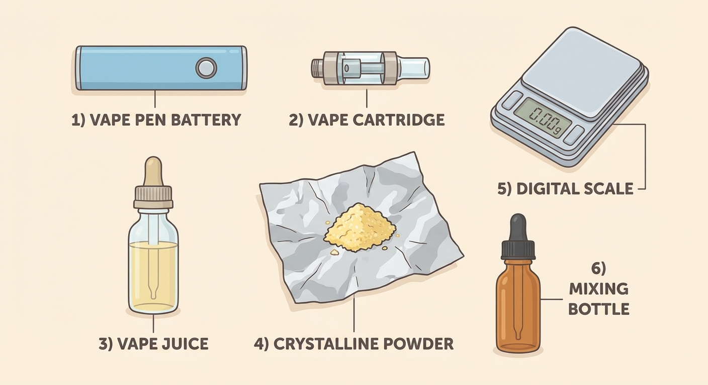
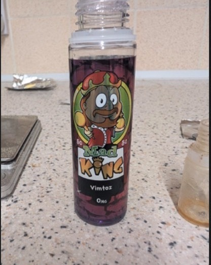
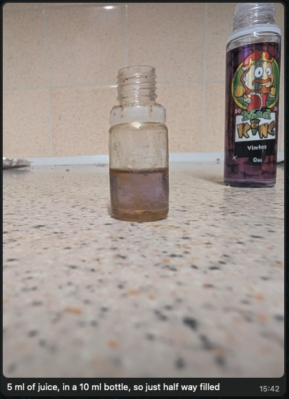
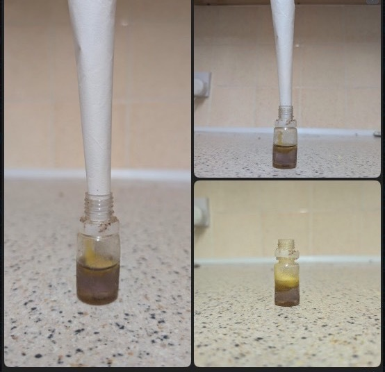
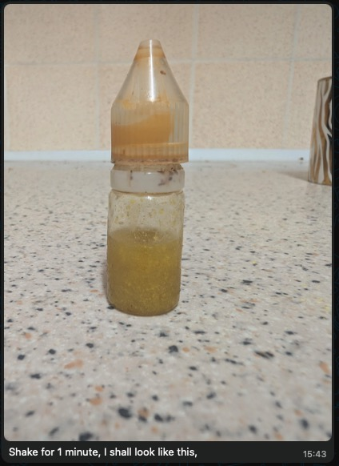
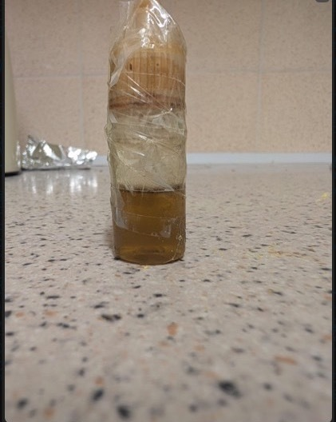

Before you can use DMT to abort cluster headache attacks, you’ll need to prepare a vape pen loaded with DMT liquid. This page walks you through everything — from buying the equipment to having a loaded pen ready to use.
Time needed: About 30 minutes of active work, plus 1 hour of waiting time.
If you’ve never used a vape before, don’t worry — it’s simpler than it looks. You’re essentially just dissolving a powder into a liquid and loading it into a small device. If you can make instant coffee, you can do this.
You need six things. Most can be ordered online and arrive within a few days.

What it is: The bottom half of your vape pen — a small rechargeable battery with a button and a charging port. Think of it like the handle of an electric toothbrush.
What to look for: You need one with variable voltage (sometimes called “variable wattage”). This means you can turn the temperature up or down with a button or dial. This matters because:
Recommended models:
Where to buy: Any vape shop (online or in-person). These are standard, legal items — you don’t need to mention DMT when buying.
What it is: The top half of your vape pen — a small transparent tank that holds the liquid, with a built-in heating element (called a “coil”) at the bottom.
What to look for: Get one with a ceramic coil. Ceramic heats more evenly than metal, which means the DMT turns into vapor (a fine mist you inhale) smoothly instead of burning. Look for cartridges labeled “ceramic” — CCELL is a popular brand that uses ceramic, but any ceramic cartridge will work. Make sure it fits your battery: most vape parts use a standard screw-on fitting called “510 thread” (like how most garden hoses use the same connector). When in doubt, ask the shop for a “510 thread ceramic cartridge.”
Where to buy: Same vape shop as the battery. Often sold together.
What it is: A flavored liquid that you’ll use as a base to dissolve the DMT into. It’s the same liquid that regular vapers use, but without nicotine (you don’t want nicotine — the label should say “0mg,” meaning zero milligrams of nicotine).
What to look for: Vape juice is made from two ingredients — propylene glycol (PG) and vegetable glycerin (VG). Both are common, food-safe substances. Get a bottle labeled 50/50 (meaning half of each). This ratio dissolves DMT well and produces smooth vapor. The flavor doesn’t matter much — pick whatever you like or a simple flavor.
Example: The photos in this guide use “Mad King Vimtoz” 50VG/50PG, 0mg nicotine — but any 50/50 nicotine-free vape juice will work.
Where to buy: Any vape shop or online vape retailer.
What it is: The active ingredient. DMT in its pure form looks like a white-to-yellowish crystalline powder. You may hear it called “freebase DMT” — “freebase” just means it’s the pure, smokable form of the molecule (as opposed to a salt form, which can’t be vaporized). The powder may range from white to deep yellow/amber depending on the extraction method — all of these are fine.
Where to get it: This guide does not cover sourcing. If you have access to DMT, it should be in powder/crystal form for this method to work.
What it is: A small digital scale that measures in increments of 0.01 grams (that’s one hundredth of a gram). You need this to weigh the DMT accurately. Eyeballing it is not safe — too much or too little will affect your dose.
What to look for: Any digital scale that reads to 0.01g (sometimes labeled “0.01g precision” or “centigram scale”). They’re about the size of a smartphone.
Where to buy: Amazon, eBay, or kitchen supply stores. They’re commonly sold as jewelry scales or kitchen precision scales.
What it is: A small empty bottle (about 10 ml) to mix the DMT and vape juice in. A small glass bottle with a dropper (a squeeze-top that lets you dispense liquid drop by drop) works well. You can also use a small empty vape juice bottle.
What to look for: It should be sealable (screw cap or dropper top) and heat-resistant. Glass is ideal. The bottle in our photos is a 10 ml plastic dropper bottle, which also works fine.
Where to buy: Amazon, pharmacies, or craft supply stores. Search for “10ml dropper bottle.”
A vape pen has two parts that screw together:
That’s it. You press the button, the coil heats the liquid, you breathe in the vapor. The same principle as a kettle turning water into steam — just smaller.
The voltage setting controls how hot the coil gets. Your device will show a number on its screen or near a dial — that’s your voltage. You’ll want to start at a low setting (around 2.5–3.0 volts) and adjust upward if needed. The right setting produces a smooth, visible vapor without any burnt taste. If you taste burning, turn it down.
This is the main preparation step: dissolving DMT powder into vape juice so it can be vaporized. We’re using the bottle method — you mix everything in a small bottle using hot water to help the powder dissolve.
The ratio: We use 1 gram of DMT per 1 milliliter of vape juice (written as 1:1). This is the standard starting concentration.
Place a piece of aluminum foil on your scale and zero it out (press the “tare” or “T” button so the scale reads 0.00 with the foil on it). Then carefully add DMT powder until the scale reads 1.00 g (1 gram).

Pour 1 ml (1 milliliter) of your nicotine-free vape juice into the small mixing bottle. If your vape juice bottle has measurement markings, use those. Otherwise, 1 ml is about 20 drops from a standard dropper.
Note about the photos: Don’t worry that the photos show more liquid than 1 ml — the person who took these was making a larger batch (5g of DMT in 5 ml of juice). The ratio is the same (1:1). For your first time, 1g in 1 ml is plenty and will fill several cartridges.


Roll a small piece of paper into a cone/funnel shape and use it to carefully pour the DMT powder from the foil into the mixing bottle. Go slowly — the powder is fine and you don’t want to spill any.
Handling tip: Work in a calm spot without drafts — the powder is light and can become airborne. If you get any on your hands, wash them with soap and water. It won’t harm you in small amounts, but you want the DMT in the bottle, not on your skin.

What to expect: The powder will sit on top of the liquid or sink to the bottom. It will NOT dissolve on its own — that’s what the next steps are for.
Screw the cap on tightly. Shake the bottle vigorously for about 1 minute.

What to look for: The liquid should be uniformly cloudy. If you see dry powder stuck to the sides, shake harder or tap the bottle to knock it loose.
First, wrap the bottle (especially the cap/top) with clear tape or cling film. This is critical — if water gets into the mixture, it’s ruined.

Then, boil your kettle and pour the hot water into a mug. Place the sealed, taped bottle into the mug of hot water. Let it sit for 10–15 minutes.

Important: Use very hot water from a recently boiled kettle — but don’t put the bottle directly into boiling water on the stove. Pour the hot water into a mug first.
Careful with the hot water. When removing the bottle from the mug, it will be very hot. Let it cool for 30 seconds before shaking, or use a towel or oven mitt to grip it.
After 10–15 minutes, take the bottle out of the water. Shake it vigorously for 1 minute again. Then:
Repeat this cycle 3–4 times total. Each round dissolves more of the DMT. You’ll see the liquid getting clearer with each cycle.
After 3–4 hot water cycles, the mixture should be a clear amber/golden liquid — ranging from pale gold (like apple juice) to deeper amber (like honey). Hold it up to a light:


Why clarity matters: Any undissolved DMT crystals will clog the tiny holes in your cartridge’s coil. A clogged cartridge won’t produce vapor — which means it won’t work when you need it during an attack.
Now you need to get the liquid from the mixing bottle into the cartridge.
Why wait? Inside the cartridge, the ceramic coil needs time to soak up (or “wick”) the liquid — like a sponge absorbing water. If you press the button while the coil is still dry, you’ll permanently burn it. The cartridge will taste like burnt rubber from that point on and you’ll need a new one. An hour of patience saves you a cartridge.
This can happen if the pen gets cold, and it’s completely normal. The DMT has just turned back into tiny solid crystals. Don’t throw it away.
To fix it:
Sometimes DMT re-crystallizes right at the mouthpiece opening, blocking airflow. If you try to inhale and feel resistance:
Turn the voltage down. A burnt taste means the temperature is too high and the DMT is being destroyed rather than vaporized. You want smooth, clean-tasting vapor.
Save a screenshot of this section for quick access.
| Item | What to ask for | Approx. cost |
|---|---|---|
| Vape pen battery | “Variable voltage, 510 thread battery” | $25–50 |
| Cartridge | “510 thread ceramic coil cartridge” | $5–15 |
| Vape juice | “50/50 nicotine-free vape juice” | $5–10 |
| DMT powder | Pure powder/crystal form | Varies |
| Digital scale | Reads to 0.01 grams | $10–20 |
| Small mixing bottle | 10 ml, sealable | $1–5 |